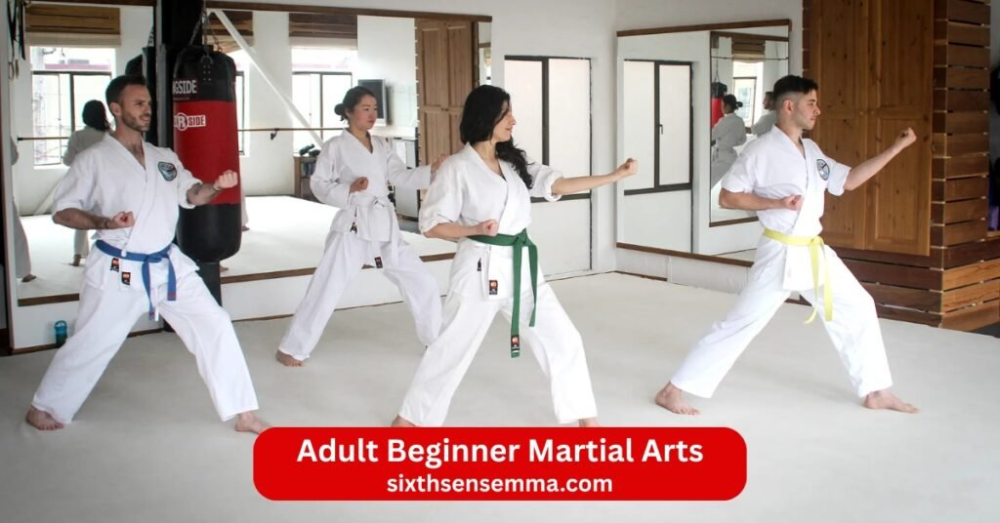
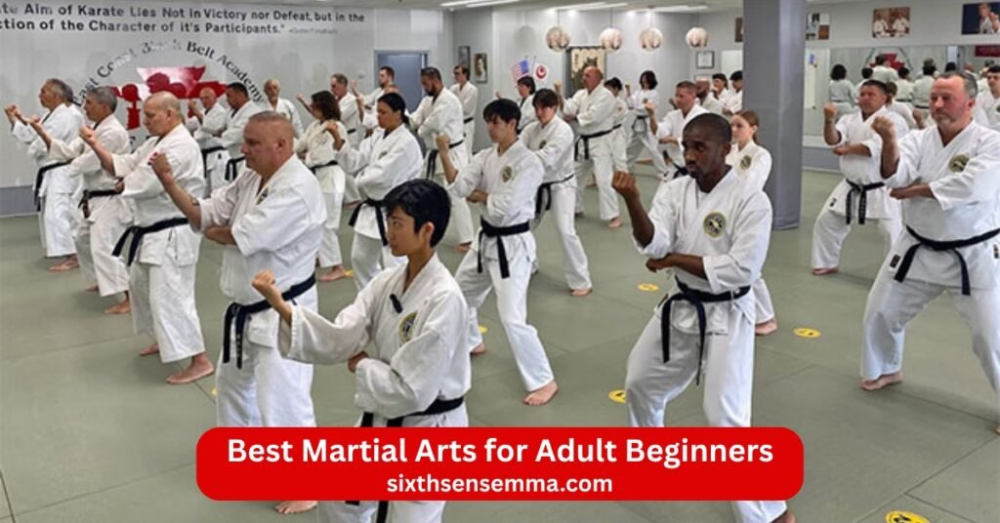
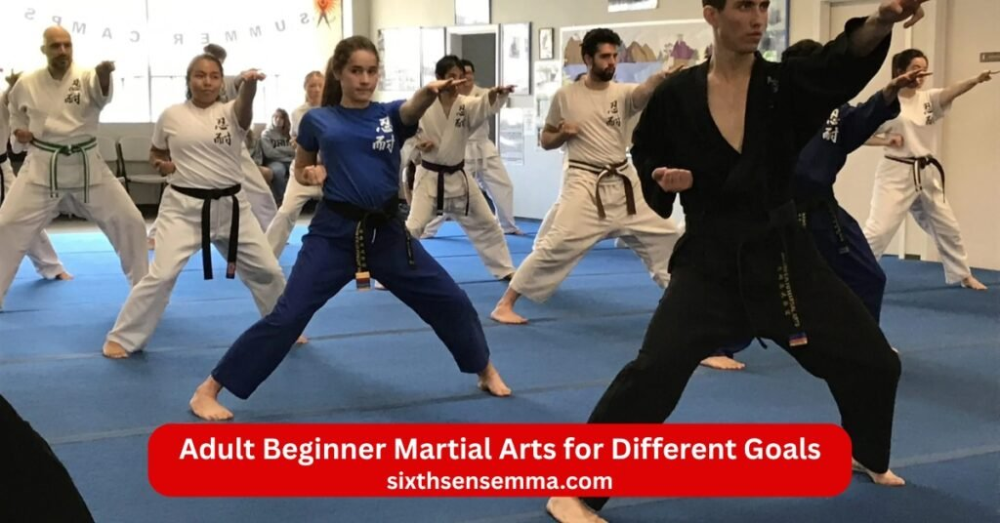

Adult Beginner Martial Arts Professional Training Programs for Adults by Sixth Sense MMA

Adult Beginner Martial Arts opens the door for grown ups who want to build real strength practical self defense better fitness and lasting confidence no matter their starting point or age. Martial arts for adults beginners at Sixth Sense MMA in Coppell TX welcomes people exactly as they are: busy professionals parents office workers or anyone ready to feel more capable and energized in daily life.Many adults hesitate because they think martial arts are only for young athletes require perfect fitness from day one or feel too intimidating to try after years away from exercise. The reality looks completely different. Starting martial arts as adult has become one of the smartest decisions thousands make every year. You do not need previous experience natural talent or a background in sports. You simply need the willingness to show up consistently and learn step by step.
What Is Adult Beginner Martial Arts?
Adult beginner martial arts means structured classes designed specifically for grown ups who have little or no prior experience. These programs introduce basic techniques such as punches kicks blocks holds and movement patterns in a clear safe way. You learn how to move your body correctly breathe properly and stay balanced from the very first session. Martial arts school that cater to adult beginner often mix striking techniques like those in muay thai karate or box with grappling elements from bjj judo or brazilian jiu jitsu. Some add mma style work that combines punch elbow joint locks and throws.
Who Should Join as a Beginner Adult?
Anyone ready to improve their health learn protection skills or simply try something new belongs in beginner adult martial arts classes. Office workers parents busy professionals and people looking to get back in shape all fit perfectly. If you feel stiff from sitting too long want to burn calories gain overall fitness or build mental toughness adult martial arts programs suit you well. Many adults start after years away from sports because they seek personal growth empowerment and a positive martial arts community. Those interested in adult self defense classes appreciate the practical focus on real scenarios.
Is It Too Late to Start Martial Arts?
No age makes it too late to begin martial arts as an adult. Plenty of people start in their 30s 40s 50s and beyond and reach high levels including black belt. The body adapts well when you train smartly with proper warm ups recovery and gradual increases in intensity. Beginner adults often progress faster than younger students because they bring focus patience and clear reasons for training. Popular martial arts like brazilian jiu jitsu muay thai karate taekwondo kung fu krav maga and judo all welcome older starters. Arts require different amounts of flexibility explosiveness or endurance but good dojos adjust the training style to match your current fitness.

Best Martial Arts for Adult Beginners
Choosing the right martial art depends on what you want most from training. Some adults seek self defense others want intense workouts or a mix of both. Here are some of the best martial arts styles and popular martial arts that work especially well for adult beginner.
Brazilian Jiu Jitsu for Beginners
Brazilian jiu jitsu ranks among the best martial art for beginners because it uses leverage and smart positioning instead of raw strength. Adult bjj beginners learn ground fighting escapes submissions and control from bad spots which feels empowering even if you are not big or athletic. Bjj teaches patience problem solving and calm thinking under pressure. Many adults love how quickly they see progress in controlling opponents larger than themselves. Grapple work builds serious core strength grip endurance and body awareness. Self defense skills shine here since most real fights end up on the ground. Beginners start with basic positions sweeps and simple holds then add layers as confidence grows.
Boxing for Adult Beginners
Box offers one of the simplest and most effective entries into martial arts training. Adult beginner classes teach proper stance footwork jab cross hook uppercut defense and basic combinations. The focus stays on rhythm timing and power generation through hips and shoulders. Boxing improves hand eye coordination reflexes and cardiovascular health fast. Adults enjoy the clear structure shadow boxing heavy bag work mitt drills and light spar that builds skill without high risk. It serves as an excellent choice for beginners who want to burn calories feel powerful and learn to protect their head in close range. Many stick with it because every session feels like a full body workout that leaves you energized.
Muay Thai Basics for Adults
Muay thai brings powerful striking techniques using punch kicks elbow and knees plus clinch work. Muay thai classes for adults start with stance balance shin conditioning basic strikes and defensive blocks. The art builds toughness leg strength core power and mental resilience through repetitive drills pad work and controlled sparring. Adults appreciate the full body conditioning that torches fat improves balance and teaches close range fighting. Muay thai stands out as an excellent choice for people who want aggressive practical self defense and a fighter mindset. Beginners progress steadily because the system breaks everything into clear steps.
Karate & Taekwondo for Beginners
Karate and taekwondo belong to traditional martial arts that emphasize discipline forms kicks punches blocks and precise movement. Karate focuses on strong linear strikes powerful stances and kata while taekwondo highlights fast high kicks spinning techniques and dynamic footwork. Both arts develop flexibility speed coordination and mental focus through structured classes. Adult beginner students enjoy the clear belt system respectful atmosphere and emphasis on self confidence. These styles work well for people who like traditional martial structure and want to improve posture agility and explosive power. Many adults find the repetitive practice calming and rewarding.
MMA Programs for Adult Starters
Beginner mma adults programs blend striking grappling bjj wrestling and basic ground fighting into one complete system. Mixed martial arts classes introduce punch kicks knees elbow takedowns joint locks throws and positional control in a safe progressive way. Adults like mma because it offers variety keeps training interesting and prepares you for real scenarios. Training that includes multiple martial arts styles builds well rounded ability and exposes you to different fighting techniques. Beginners start slow with technique drills light contact and partner work that matches skill level. Mma attracts people who want the best martial art in the world for versatility and full physical fitness.
Benefits of Adult Beginner Martial Arts Training
Benefits of martial arts training show up quickly and keep growing with consistent practice. Martial arts practice as an adult delivers changes that improve daily life far beyond the gym.
Self Defense Skills for Real Life
Self defense stands as a top reason many adults join. Effective martial arts teach awareness distance management escapes and practical responses to grabs strikes or ground attacks. Adult self defense classes focus on realistic scenarios so you learn to stay calm de escalate or finish safely. Krav maga bjj muay thai and mma especially shine for street ready self defense skills. Adults gain peace of mind knowing they have tools that work against bigger stronger opponents.
Weight Loss & Fitness Improvement
Martial arts fitness adults programs provide high calorie burn full body conditioning and functional strength. Sessions mix cardio strength flexibility and explosive power so you lose fat build lean muscle and boost endurance. Overall fitness improves through constant movement grip work core engagement and dynamic drills. Many adults see steady weight loss better posture increased energy and reduced joint stiffness after a few months. The variety keeps workouts fun so consistency happens naturally.
Confidence & Mental Strength
Martial arts build deep self confidence through small daily wins overcoming challenges and mastering new techniques. Facing resistance on the mat teaches resilience patience and focus under pressure. Personal growth happens as you push past comfort zones celebrate progress and earn respect from fellow students. Mental strength grows from showing up regularly staying composed during tough rolls and learning from setbacks. Adults often report feeling more assertive capable and positive in everyday situations.
Stress Relief & Discipline
Training acts as a powerful outlet for daily tension. Hard sessions release endorphins clear the mind and create a sense of accomplishment. The structure of classes warm ups drills and cool downs teaches discipline and routine that spills over into work family and health habits. Martial arts community adds support encouragement and friendships that make showing up enjoyable. Many adults find training reduces anxiety improves sleep and helps them handle stress with a calmer mindset.
Common Fears & Myths for Adult Beginners
Starting martial arts as adult brings up several common fears and myths that stop people before they even try a trial classes. Most of these concerns disappear once you step on the mat and see how real martial arts training works for everyday adults.
Fear of Injury
Many adults worry that martial arts will lead to sprains strains or worse because they picture intense contact right away. The truth stays far different in beginner programs. Good martial arts school start slow with technique drills body mechanics warm ups and controlled partner work. Instructor teach proper falling tapping out and listening to your body so risk stays low. Adult beginner classes avoid heavy spar at first and build gradually.
Lack of Fitness or Flexibility
People frequently think they need to get in shape before joining or that they lack the flexibility to kick high or stretch far enough. Martial arts fitness adults programs expect beginners to arrive exactly as they are. Training itself builds the needed strength endurance coordination and range of motion over time. Classes include mobility drills dynamic stretches and progressive movements that improve flexibility naturally without forcing extreme positions. You do not need to touch your toes on day one. Many adults arrive stiff or out of breath yet see big gains in overall fitness within weeks.
Feeling Too Old to Start
A big myth says martial arts belong only to young people and that starting later means slower progress or higher risk. Adults in their 30s 40s 50s and even 60s join regularly and reach black belt levels with dedication. Age brings advantages like better focus discipline patience and life experience that help learning. Martial arts as an adult adapts to recovery needs joint health and realistic goals. Teaching style changes for mature students with emphasis on smart technique efficient movement and listening to the body.
No Previous Experience
Adults often feel intimidated because they never did sports or martial arts growing up. No previous experience required for beginner adult martial arts classes. Every student starts at zero and the instructor explain everything clearly from basic stance to breathing to simple techniques. Fellow students remember their own first days and offer encouragement. Trial classes let you try without pressure so you see how welcoming the environment feels.
Sixth Sense MMA Adult Beginner Martial Arts Services
Sixth Sense MMA designs services specifically for adult beginner so starting feels easy safe and rewarding. Our adult martial arts programs remove barriers and focus on steady real progress in Coppell TX.
Beginner Friendly Training Programs
Every program starts slow and builds carefully. Beginner adults learn fundamentals through clear step by step drills partner work and light resistance. We mix striking techniques grappling and basic self defense in ways that suit grown up bodies and schedules. Classes keep intensity appropriate avoid ego driven rolling and emphasize fun learning. You gain physical fitness self confidence and practical skills without feeling overwhelmed. Many adults stay long term because the training feels achievable and enjoyable from week one.
Certified Instructors for Adults
Our instructor hold recognized certifications and years of teaching adults specifically. They understand adult learning styles busy lives recovery needs and common concerns like joint health or work stress. Coach break down moves patiently correct form gently and create a supportive space where questions feel welcome. Adults appreciate the calm professional guidance that makes complex techniques feel doable.
Small Group & One on One Coaching
We keep groups small so every student gets personal attention. Small group settings allow instructor to watch form spot issues early and pair partners thoughtfully. For those who prefer more focus one on one coaching lets you move at your exact pace address specific goals and build confidence faster. This setup removes intimidation helps beginners ask questions freely and accelerates progress without pressure.
Flexible Class Schedules
Life as an adult means unpredictable hours so we offer morning evening and weekend classes that fit around work family and other commitments. Multiple time slots let you train consistently without forcing major changes to your routine. Drop in options and makeup sessions add extra flexibility. Consistent attendance becomes realistic which leads to better results in fitness self defense and mental strength.
How Sixth Sense MMA Training System Works
Our approach combines structured learning careful safety measures and personal attention so starting martial arts as adult becomes enjoyable and effective. Every part of the system supports long term progress without shortcuts or unnecessary risks.
Free Trial Class for Beginners
Every new adult starts with a free trial class designed specifically for people with zero or little experience. During this session you meet the instructor tour the facility try basic warm ups learn simple techniques such as stance movement breathing and one or two easy strikes or escapes and roll or drill lightly with a patient partner. The trial classes let you feel the teaching style sense the environment and ask any questions without any commitment. Many adults decide to join right after because they see how welcoming and beginner focused everything stays. No special clothes gear or fitness level required just show up ready to learn.
Step by Step Skill Progression
Progress happens in clear logical stages that match your current ability. Beginners begin with fundamentals stance balance basic punches blocks footwork and simple body mechanics. Next come combinations escapes from common holds and controlled partner drills. As comfort grows we add layers like striking techniques basic grappling positional control and light resistance. Each level builds directly on the last so nothing feels rushed or confusing. Instructor track your development through regular checks feedback and small milestones. Whether you train bjj muay thai boxing or mma style the path stays progressive and measurable so you always know exactly where you stand and what comes next.
Safety First Training Approach
Safety shapes every decision we make. Classes start with thorough warm ups mobility work and joint preparation to reduce risk. Instructor enforce strict rules on tapping out controlled speed no ego rolling and listening to your body. Beginners pair with experienced students who know how to train gently. We avoid heavy contact until form stays solid and intensity matches readiness. If anyone feels any discomfort we adjust immediately switch to technique review or rest. This safety first mindset lets adults train consistently without fear of setbacks. Many report feeling stronger and more durable over time because the system protects joints builds resilience and teaches smart movement.
Personalized Fitness Assessment
Before regular training begins every adult gets a simple personalized assessment. The coach asks about your health history current activity level any past injuries goals and comfort with movement. We then check basic mobility posture balance core strength and coordination through easy tests like squats push ups light movement patterns and breathing checks. This quick evaluation helps us place you in the right group modify drills if needed and create a starting plan that matches your body. The assessment repeats every few months to track improvements adjust intensity and celebrate gains in physical fitness and capability.

Adult Beginner Martial Arts for Different Goals
Adult martial arts programs at Sixth Sense MMA adapt to what each person wants most. Whether your main focus stays practical protection better shape mental toughness or something more advanced we have a clear path that delivers.
Self Defense Focused Training
Adults who prioritize real world protection choose sessions heavy on practical self defense. Training covers awareness distance management escapes from grabs clinches ground positions and simple finishes that work against larger opponents. Techniques emphasize control de escalation and quick resolution rather than flashy moves. Instructor use realistic scenarios partner drills and stress testing so skills feel reliable outside the gym. Many students report feeling noticeably more secure and prepared after just a few months.
Fitness & Weight Loss Programs
Those who want serious conditioning and weight loss join martial arts fitness adults focused groups. Sessions deliver high calorie burn through constant movement combinations pad work light spar and full body drills. Overall fitness improves fast with gains in strength endurance coordination and core power. Adults see steady fat loss lean muscle development better energy levels and improved posture. The variety and fun of training keep motivation high so consistency becomes natural rather than forced.
Confidence Building Courses
Confidence grows through repeated small successes facing challenges and mastering new skills. Sessions include positive reinforcement partner encouragement and progressive goals that let you see clear improvement. Overcoming hesitation during drills succeeding in controlled rolls and earning feedback from fellow students builds real belief in yourself. Adults often notice they carry themselves taller speak up more easily and handle daily pressures with greater calm. The martial arts community adds support that makes the process feel shared and uplifting.
Competition Preparation (Optional)
For adults who want to test themselves we offer optional competition paths. Once fundamentals stay solid interested students move into higher intensity groups with strategy refinement timing work and tournament specific drilling. Instructor provide guidance on mindset preparation and safe progression toward local events if desired. Many keep it recreational but those who pursue it gain extra discipline focus and achievement. The option stays completely voluntary so training always matches personal comfort.
Why Choose Sixth Sense MMA for Adult Beginner Martial Arts Academy?
Adults pick Sixth Sense MMA because we understand grown up beginners need a different approach than kids or advanced fighters. Our adult martial arts near me focus creates the perfect setting for lasting progress.
Beginner Safe Environment
The entire gym stays geared toward newcomers. Padded mats good lighting clean space small groups and welcoming energy remove any sense of intimidation. Classes move at a pace that suits adults with emphasis on learning over performance. Everyone starts somewhere and the atmosphere celebrates effort and improvement no matter the starting point.
No Intimidation No Pressure
No one gets judged rushed or pushed beyond their limit. Instructor create a zero ego space where asking questions feels normal and mistakes become learning moments. Partners train mindfully with respect for different levels. The lack of pressure lets adults relax focus on their own growth and enjoy the process fully.
Proven Results with Adult Students
Hundreds of adults have transformed through our programs. Students lose weight gain strength improve posture reduce stress build real self defense awareness and report higher daily confidence. Many earn belt promotions compete successfully or simply feel healthier and more capable in everyday life. Testimonials highlight how training changed their outlook energy and sense of personal power.
Supportive Coaching Community
Our martial arts community consists of adults just like you who encourage each other celebrate wins and share the journey. Coach stay approachable invested in your success and available for questions outside class. Friendships form naturally adding motivation and accountability that make showing up easier and more enjoyable.
Contact US
We respond quickly and personally because we know starting martial arts as adult often begins with a few simple questions. Our adult beginner martial arts team is ready to help you feel comfortable and excited about taking the first step. No matter if you are looking for adult self defense classes martial arts fitness adults sessions adult bjj beginners training beginner mma adults adult kickboxing classes or just want to try something new for better health and confidence we are here.
- 817 S MacArthur Blvd #100 Coppell TX 75019 United States
- (469) 972 7800
- info@sixthsensemma.com
Conclusion
Adult Beginner Martial Arts delivers results that go far beyond the gym walls when you train consistently at a place built for grown ups just starting out. Martial arts for adults beginners at Sixth Sense MMA proves every day that age current fitness level or lack of prior experience never stands in the way of real progress stronger health practical self defense and deeper confidence.The biggest shift adults notice comes from the steady habits they build: showing up regularly learning one clean technique at a time pushing through discomfort safely and celebrating small wins that add up fast.
Follow Us on Social Media
Stay connected with Sixth Sense MMA through our social media channels. Follow us for class updates, training tips, and a closer look at our self defense community.
FAQ’s
Adult Beginner Martial Arts refers to martial arts programs specifically designed for adults who are starting with no prior experience. These classes focus on fundamentals, safety, fitness, and confidence-building at a comfortable pace.
Yes, Adult Beginner Martial Arts is suitable for adults of almost any age. Many schools welcome students in their 30s, 40s, 50s, and beyond, adjusting training intensity to individual abilities.
No, you do not need to be fit before starting Adult Beginner Martial Arts. The training itself helps improve strength, flexibility, balance, and endurance over time.
The best option for Adult Beginner Martial Arts depends on your goals. Popular beginner-friendly styles include Karate, Taekwondo, Brazilian Jiu-Jitsu, Muay Thai, and Judo.
Most Adult Beginner Martial Arts students train two to three times per week, which allows consistent progress while giving the body enough recovery time.
Yes, Adult Beginner Martial Arts is very effective for self-defense. It teaches awareness, basic techniques, and practical skills useful in real-life situations.
For Adult Beginner Martial Arts, beginners can start with comfortable workout clothes. Many schools later provide or recommend a uniform.
Many adults notice improvements within a few weeks of Adult Beginner Martial Arts, including better fitness, coordination, focus, and confidence.
Adult Beginner Martial Arts is generally safe when taught by experienced instructors who emphasize correct technique, control, and injury prevention.
Yes, Adult Beginner Martial Arts helps reduce stress, improve mental focus, boost confidence, and support overall emotional well-being.
Train with us in Coppell
The first class is free. Shorts, a t-shirt and a water bottle. We lend the rest.
Book a free class